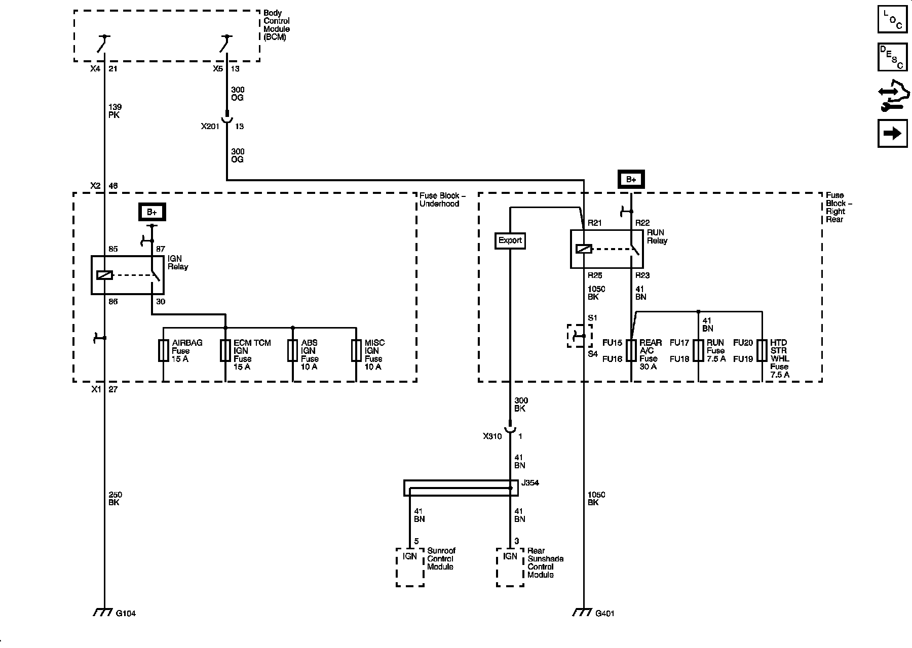
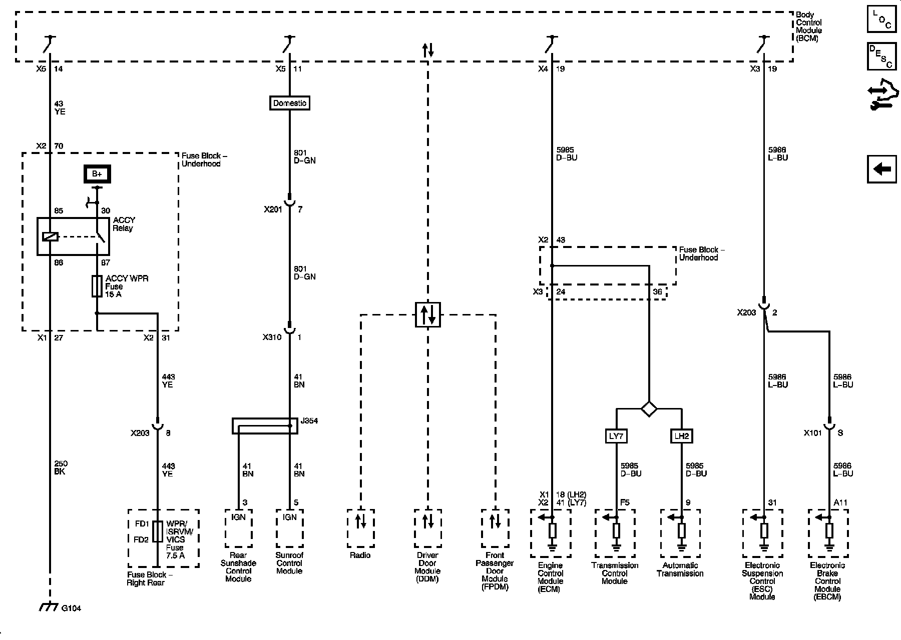

Operation CHARM
: Car repair manuals for everyone.
Home
>>
Cadillac
>>
2008
>>
SRX AWD V8-4.6L
>>
Repair and Diagnosis
>>
Powertrain Management
>>
Relays and Modules - Powertrain Management
>>
Relays and Modules - Computers and Control Systems
>>
Body Control Module
>>
Diagrams
>>
Electrical Diagrams
Electrical Diagrams
Power Moding Schematics
Ignition Power Modes - RUN

Power Modes - ACCY and RAP
